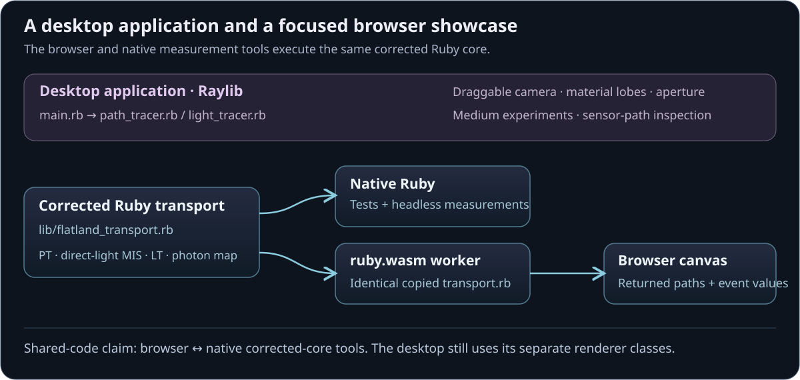

Visualizing the rendering process elegantly in 2D.
Flatland — Light Transport
A 2D transport laboratory where camera rays, light paths and photon gathers stay visible. Explore the broader Ruby/Raylib desktop tool, or compare PT, direct-light MIS, LT and finite-radius photon mapping in a smaller browser showcase running the corrected Ruby core.
Current Ruby/WebAssembly edition: a light path, its explicit camera connection, sampling lobe and recorded per-event contribution.
An implemented pipeline
Follow the arithmetic behind a visible path
Three sampling constructions target the same angular sensor. Their intermediate events make both successful and failed samples part of the explanation.
→01
Draw a path
Start from the camera or a line emitter.
↗02
Test a connection
Visibility decides whether a candidate contributes.
p(θ)03
Account for density
Evaluate PDFs and MIS weights in the same measure.
Σ04
Measure agreement
Compare angular films, path counts and uncertainty.
Capabilities / connected systems
Read the system by what it makes possible
Related techniques belong to one family. Follow a family into the interface, recorded results and mathematical detail.
Make image formation visible by drawing transport events and the sensor in the same plane.
Event-by-event replayMovable camera and sensorAperture experimentsTwo application scopes
Feature set · 4 capabilities
Event-by-event replayStep sampled paths through intersections and visibility decisions before inspecting their accumulated estimate.
Movable camera and sensorChanging camera geometry exposes how available connections map onto sensor bins.
Aperture experimentsDesktop views make large-aperture and pinhole connection opportunities visible.
Two application scopesThe desktop explores a broad material/camera workspace; the Ruby browser edition concentrates on a declared diffuse angular-sensor model.
Inspect the physical response, sampling density and transport weight as distinct quantities.
Directional material inspectorsExplicit visibility proposalsMedium eventsTermination controls
Feature set · 4 capabilities
Directional material inspectorsDiffuse, glossy, specular, dielectric and multi-lobe experiments reveal different response and sampling shapes.
Explicit visibility proposalsNext-event estimation draws emitter connections separately from continuation rays; light tracing starts from emission and connects toward the sensor.
Medium eventsHomogeneous and varying-density desktop experiments expose interior scattering and phase-function choices.
Termination controlsDesktop roulette controls and the browser’s finite-depth convention show two different rules for ending paths.
Declare the same scene and sensor, then compare sampled connections with finite-radius photon reconstruction.
True 2D measuresPT, direct-light MIS and LTSurface photon mappingExplicit sensor normalizationOne authoritative Ruby engine
Feature set · 5 capabilities
True 2D measuresAngular directions, segment emitters and the length-to-angle Jacobian define the model’s scattering and connection weights.
PT, direct-light MIS and LTThree strategies share the same diffuse transport target and finite bounce convention.
Surface photon mappingStore emitted flux, inspect a surface gather, and adjust radius and bounded map size; finite-radius and angular-quadrature error are stated explicitly.
Explicit sensor normalizationAngular-bin averages account for every launch, including paths that contribute nothing.
One authoritative Ruby engineNative tests and the worker-hosted ruby.wasm showcase execute the same transport source while JavaScript presents its returned events.
Read aggregate estimates alongside uncertainty and individual path explanations.
Progressive samplingInspectable zero contributionsUncertainty beside the imageDeclared validation scope
Feature set · 4 capabilities
Progressive samplingScene and depth changes begin a new comparison rather than pooling incompatible sample histories.
Inspectable zero contributionsEvent records retain failed connections so a blocked or inadmissible proposal remains explainable.
Uncertainty beside the imageIndependent-launch standard errors accompany PT/MIS/LT. The photon map instead states its radius and budget, since reused photons and fixed-kernel bias require a different error analysis.
Declared validation scopeRecorded deterministic, native-versus-WASM and multi-seed checks support the corrected diffuse core; broader desktop estimator findings remain separately documented.
Technical brochure · 12 chapters
Inside Flatland — Light Transport
Flatland is a light-transport laboratory where the construction of an image stays visible: rays, scattering directions, visibility tests, sensor contributions and photon gathers can be inspected in the scene itself. The Ruby/Raylib desktop application supplies the broader interaction workspace. A simplified browser showcase compares three path estimators with a finite-radius photon map using the corrected Ruby core. It stands as an intuitive rendering study and as a foundation for RadianceLab’s more advanced estimator experiments.
Description · what it doesExplanation · how it worksTheory · equations & assumptions
Scan the descriptions and figures, or open a layer for the implementation and mathematical detail.
01
Capability family
Path replay, camera & sensor geometry
Make image formation visible by drawing transport events and the sensor in the same plane.
01 · Two ways into the project
Explore on desktop or in the browser
Description · at a glance
The desktop application makes rendering geometry directly manipulable: move a camera or sensor, change the aperture, inspect material lobes and medium phase functions, and replay the connections that contribute to a sensor bin. The aim is to understand light transport by manipulating its geometry.
The browser concentrates on a smaller, explicitly normalized model: diffuse surfaces, one-sided line emitters and a pinhole angular film. It runs path tracing, path tracing with direct-light MIS, light tracing and surface photon mapping. The photon map is a new density-estimation route with finite-radius bias; it does not claim the exact same convergence target as the three random-path estimators at fixed settings.
The desktop has the broader interface, but its original tracer classes retain known sampling and normalization issues. The corrected browser core also runs directly in Ruby; it has not yet replaced those desktop classes.
Video Desktop application recording: editable transport geometry and the broader interaction controls.
Feature family
Ruby / Raylib desktop
Simplified browser showcase
Path algorithms
PT and LT with explicit connection experiments
PT, direct-light MIS, LT, and a new finite-radius surface photon map
Camera and sensor
Draggable camera/sensor, aperture and sensor-path inspection
Fixed pinhole camera with 64 angular radiance bins
Materials
Diffuse, mirror, glass, glossy / microfacet and multi-lobe experiments
Two-sided diffuse surfaces and one-sided line emitters
Media
Homogeneous / varying-density experiments and phase inspector
Not included; requires a consistent tested 2D scattering model
Scene interaction
Editable geometry, presets and directional inspectors
Five presets, reflectance, emitter size, depth, seed and photon controls
Density estimation
Not connected to the preserved Raylib PT/LT selector
Photon flux storage, intrinsic surface gather, radius and budget
BDPT / VCM / MLT
No complete implementation
No complete implementation; direct-light MIS is not full BDPT
Execution
Original PathTracer / LightTracer renderer classes
Corrected Ruby source shared byte-for-byte with native measurements and tests
ExplanationWhy a complete browser port is more than compiling RubyThe interpreter is already hosted; interaction and estimator conventions are the remaining work.＋
The browser worker already executes real Ruby. JavaScript supplies controls and draws the engine’s returned geometry and event records. Porting the desktop’s wider feature set therefore means rebuilding its Raylib interaction layer or supplying a compatible browser frontend, including scene editing, camera manipulation, aperture and directional inspectors.
Numerical conventions must move with those controls. A material needs a mutually consistent response, sampler and density in two-dimensional angle measure. A medium needs a normalized 2D phase function and free-flight accounting. Moving the existing widgets without correcting those contracts would preserve known errors alongside the attractive diagrams.
The surface photon map is a bounded addition because it reuses the corrected scene, diffuse sampler and emission model. VCM additionally needs a complete bidirectional connection family, compatible forward/reverse densities and merging MIS. MLT needs a path-mutation state space, acceptance probabilities and normalization. These are substantial follow-on implementations, not aliases for the new photon-map option.
02 · Desktop workflow
Follow a path before averaging it
The desktop view lays out scene geometry and the sampled path in the same plane. A ray can be followed to its next intersection, through a material interaction and onward to another surface or emitter. Rejected visibility connections are useful evidence too: they explain why a plausible geometric connection contributes nothing.
Space advances one event, R generates a new path and A toggles automatic playback in the desktop application. Speed controls change inspection pace; clearing history separates runs. PT/LT selection and scene presets expose different geometric opportunities. The browser uses its own labeled controls for the smaller demonstration.
Color can represent throughput or a related diagnostic quantity. Its meaning must be read with the selected visualization mode: throughput, probability density and throughput divided by density are different quantities. A vivid path is not automatically a large unbiased contribution.
Video Original stepping, playback and scene-inspection workflow.
Image A sampled path shown together with its interaction geometry.
03 · Camera and film
The sensor is part of the diagram
The original application exposes camera and sensor geometry directly in the scene. Moving the camera or sensor changes the connection geometry, making it possible to inspect how rays map to sensor positions instead of treating image formation as a hidden final step. Aperture changes provide another way to see which paths can reach the camera construction.
The sensor inspector keeps more information than a final brightness strip. Individual bins can be examined alongside the paths that contributed to them, linking a bright region back to specific transport events. Increasing samples makes the displayed estimate less erratic, but that convergence alone cannot establish a correct normalization.
The aperture and pinhole demonstrations show how changing camera geometry changes available connections. Their recorded brightness is not presented as a calibrated thin-lens reference. The browser showcase instead declares an angular sensor whose normalization can be tested directly.
Video Desktop aperture manipulation and its effect on visible connections.
Video Inspecting sensor bins and the paths behind their accumulated values. Image A desktop low-sample sensor view. Image A denser desktop accumulation, illustrating the role of repeated sampling.
02
Capability family
Scattering, connections & exploratory media
Inspect the physical response, sampling density and transport weight as distinct quantities.
04 · BSDF and phase inspection
A material is also a sampling distribution
Selecting a surface in the desktop explorer opens a directional view of its response and sampled directions. Diffuse, glossy, specular, dielectric, microfacet and multiple-lobe experiments give distinct pictures of where a path can continue. The phase-function view extends the same inspection idea to scattering inside a medium.
These displays distinguish three ideas that are often conflated: the physical scattering function, the probability density used to sample it, and the resulting Monte Carlo weight. Matching their shapes visually is insufficient; their normalization and measure must agree. A mirror drawn as a widened spike is a useful illustration of concentration, but the physical delta distribution is not an ordinary finite-width lobe.
The desktop inspector is useful for comparing directional constructions. Numerical comparisons in the browser use a smaller diffuse model with tested sampling and weighting. Glass, microfacet and medium workflows remain documented here, with their estimator conventions treated separately from the browser validation.
Image The original interactive distribution inspector.
Image Desktop multiple-lobe surface experiment. Image Desktop dielectric direction display; glass is outside the corrected browser model. Image Desktop medium phase-function inspection, preserved as exploratory evidence.
A camera path may continue through several surfaces before finding a light. Next-event estimation adds an explicit proposal toward an emitter at eligible interactions. Its shadow connection is shown separately from the continuation ray, so an occluder, a back-facing emitter or a missed geometric opportunity can be identified directly.
Light tracing reverses the starting point: paths are launched from emitters and can attempt connections to the sensor along their journey. The desktop recordings compare large and small apertures and explicit camera connections. This makes the measure-zero difficulty of accidentally hitting a pinhole intuitive, while also motivating why connection weights need careful geometric factors.
Desktop presets include multi-light color mixtures, object arrays, focused-light arrangements and Cornell-like enclosures. They expose path families worth inspecting. The source audit also identifies estimator normalization issues, collected in the validation section rather than treating a convincing diagram as numerical evidence.
Video Desktop next-event connections from camera paths.
Video Desktop light tracing with a larger camera aperture. Video Desktop small-aperture behavior makes rare camera hits visible. Video Explicit light-path connections to the camera in the original explorer.
06 · Additional desktop features
The desktop also explores paths inside a medium
The original medium experiments introduce scattering events between surface hits, including homogeneous and spatially varying density constructions. A path can change direction inside the medium, and the phase-function inspector makes the chosen angular response visible. This is a useful extension of the event-based interface because an interaction no longer needs a visible surface to explain its location.
The source includes a delta-tracking-style attempt for varying density. Its phase evaluation and angular sampler still need a consistent normalized two-dimensional formulation before entering the matched-estimator comparison. The medium remains part of the desktop application’s exploratory scope.
The desktop also exposes Russian-roulette termination controls, including the minimum bounce before termination and a survival setting. Roulette changes which paths continue and requires compensating weights; it is different from simply discarding all paths beyond a fixed depth. The browser currently uses an explicit finite-depth target instead. Its simpler termination contract makes the three estimator comparisons easier to verify without implying that the desktop's broader controls have been fully ported.
Image Desktop medium/light-tracing demonstration from the original project. Volumetric sampling remains outside the simplified browser showcase.
03
Capability family
A shared two-dimensional transport core
Declare the same scene and sensor, then compare sampled connections with finite-radius photon reconstruction.
07 · Corrected model
Two-dimensional transport needs two-dimensional measures
The browser model is not a three-dimensional renderer with one coordinate removed. Directions are measured by angle around a circle, and emitters are line segments. A diffuse surface integrates cosine over a half-circle, giving a normalization of two. Consequently its scattering function and cosine-sampling density use a factor of one half, rather than the familiar three-dimensional division by π.
Light sampling must also convert the emitter's length measure into directional angle. Distance and the emitter's projected orientation supply that Jacobian. One-sided emission and surface orientation checks determine whether the connection is even admissible. Applying the three-dimensional inverse-square solid-angle conversion here would silently change the model.
f = ρ / 2; p(θ) = cos θ / 2; dθ = |cos θ_light| ds / r
These formulas use a two-dimensional diffuse hemisphere and a line emitter. They are not the solid-angle formulas of a three-dimensional surface renderer.
08 · A shared sensor and transport model
Three estimators target the same sensor
Each browser sensor bin reports average radiance over a declared angular interval. Camera paths sample uniformly across the whole field of view; a hit bin receives the corresponding bin-count factor, and every launch enters the denominator. The MIS version adds emitter proposals with compatible directional densities and complementary continuation weights.
Light tracing launches positions and directions from the emitters, then connects eligible vertices to the camera. A launch can contribute to several angular bins, and all launches belong in its normalization, including those that contribute nothing. Direct emitter-to-camera contributions use the sampled emitter position independently of the launch's random outgoing direction; requiring a random ray to hit the pinhole would discard the relevant contribution.
All three estimators share the same finite bounce convention. The selectable limit defines a truncated transport target; it is not an assertion that the omitted higher-order light is zero. Equal launch counts also do not mean equal work, since the methods perform different numbers of intersections and visibility tests.
Strategy
Starts at
Explicit connection
Common accounting
PT
Camera angle
Continuation reaches emitter
Average over all launched paths
PT + direct-light MIS
Camera angle
Surface → sampled emitter
Combine competing densities in the same angular measure
LT
Emitter position and direction
Emitter or surface → camera
Each path can splat several bins; count misses too
09 · Surface photon mapping
Store the light path, then reconstruct the surface
Description · at a glance
Photon mapping changes what happens after an emitted path finds a surface. Each diffuse hit stores its arriving flux. A camera-visible point then gathers nearby deposits on that same surface, turning discrete hits into an estimated outgoing radiance. In the browser, the stored hits are visible and the selected gather is highlighted along the actual surface.
A radius control makes the central tradeoff tangible. A small support preserves sharper lighting changes but may contain too few photons. A wider support stabilizes the image while smoothing shadow boundaries and illumination detail. Even with many photons, that finite-radius smoothing is biased. The film uses eight fixed camera directions per angular bin, adding a separate quadrature approximation.
The default map launches 4,096 paths and then freezes; larger budgets store more photon samples. PT, MIS and LT can keep accumulating alongside it. Changing the scene, depth or photon settings rebuilds the map. A one-path inspection follows photon emission and storage, then shows a camera-visible gather and the flux-to-radiance conversion.
Image Actual browser photon-map inspection: a 4,096-launch map, emitted path, stored surface hits and a 241-photon gather along the curved receiver. The displayed point reservoir illustrates the structure; reconstruction uses all stored hits.
L̂(x) = (ρ(x) / 2) · Σ Φᵢ / (N · ℓ_support)
Sum incident photon flux inside the gather support, divide by every launched photon and the support’s surface length, then apply the receiving material once. In a 2D scene the surface kernel measures length, not the area of a 3D disk.Theory / mathematicsFlux, support length and the receiving materialA 2D gather needs a 1D surface kernel, correct launch normalization and exactly one receiver factor.＋
Emission samples uniformly over total emitting length ℓ and samples direction with density cos θ / 2. Its initial flux weight is therefore 2 Lₑ ℓ. A photon is stored before multiplying by the receiving reflectance; continuation then multiplies by that reflectance for the next bounce. The gather applies ρ(x) / 2 once at its own receiver.
An interior segment query uses a support length of 2r. At an endpoint the support is clipped and normalized by its actual remaining length. A circle uses intrinsic arc length and wraps across the angular coordinate seam. If a support covers the entire circle, each photon is counted once. This avoids treating the 2D surface as an area disk or introducing a seam artifact.
Grouping deposits by object and face keeps a nearby separate sheet or reverse side out of the gather. This prevents one common light-leaking failure, but it does not eliminate finite-radius bias: an interval can still cross a lighting discontinuity on the same surface.
The map reuses the same photon population across film bins. Those outputs are correlated, and a fixed-radius bias is not measured by the independent-launch standard error displayed for PT/MIS/LT. The photon panel therefore reports its radius, launches, stored hits and query work without a misleading uncertainty interval.
ExplanationThe structure underneath the dotsSorted surface coordinates and RGB prefix sums turn a geometric support into a flux query.＋
Each deposit retains an intrinsic surface coordinate, incoming RGB flux, hit point and bounce depth. Deposits are partitioned by object and side, sorted along the surface, and accumulated into prefix sums. Binary searches find the support endpoints; subtracting the prefix sums yields the incident flux in that interval.
The photon-map budget bounds storage. The display uses a separate random stream to select a small reservoir, so drawing or recording more diagnostic points does not change transport sampling. When the map stops growing, its reconstructed film is cached. Scene changes discard both the map and cached camera intersections.
10 · Implementation boundary
One corrected Ruby file runs in two environments
The simplified showcase runs the real transport engine inside a worker with a pinned, locally vendored ruby.wasm runtime. It needs no Ruby server. The JavaScript message bridge dispatches requests and draws engine-returned geometry, values and events.
The build script copies the authoritative Ruby source into the static artifact. The browser build uses a byte-identical copy of that source. Native tests and headless measurements load the authoritative file directly, which makes their comparison about execution environments rather than independently rewritten estimators.
Shared engine: scene intersections, random draws, path weights, visibility tests, film statistics, photon storage/gathers and event records.
Browser presentation: controls, plots and the schematic drawing of returned paths.
Desktop application: broader material/camera interactions using its existing Raylib renderer classes.

Diagram Source-derived execution map. Browser and native measurement tools share the corrected core; the desktop application’s wider renderer classes remain a separate integration path.
04
Capability family
Progressive comparison & numerical evidence
Read aggregate estimates alongside uncertainty and individual path explanations.
11 · Browser controls
Compare the image, then inspect a path
The browser starts with a scene, a strategy selection and progressive sampling. Presets vary emitter size, visibility and diffuse interreflection while retaining the same supported material model. Changing scene or transport depth starts a new comparison, preventing incompatible samples from being pooled into one history.
The aggregate view reports path-estimator means and estimated uncertainty alongside the angular sensor; photon mapping reports the finite-radius reconstructed film and its bounded map state. A one-path trace exposes a finite sequence of events, and selecting an event reveals the corresponding geometry, contribution and formula. A zero contribution remains inspectable because its cause may be more informative than a successful connection.
Exposure and display mapping affect presentation only. They are not part of the radiance estimator. A visually similar sensor strip can conceal different numerical values, so the reported means and uncertainty belong beside the image. Sampling runs in a worker to keep these controls responsive while the actual Ruby engine executes.
12 · Evidence
Check that the estimators agree
Description · at a glance
For the small-emitter experiment, the recorded mean estimates were approximately 0.01683 for PT, 0.01690 for MIS and 0.01659 for LT. Their recorded RMS per-run standard errors were about 0.00165, 0.00021 and 0.00024 respectively. This demonstrates the sampling advantage of explicit connections in that setup, while the overlapping estimates support a shared target. It is not a universal ranking of rendering algorithms.
The new photon tests compare a one-bounce finite-support gather against an independently integrated analytical irradiance, and separately check emitted flux, endpoint support, a circle’s coordinate seam, object/side isolation, zero energy and recording neutrality. These are targeted checks of the implemented surface mapper. Glass, medium transport and broader bidirectional or Metropolis methods still require their own response, density and accumulation contracts.
Desktop estimator audit
The source audit found mismatches between angular sampling and reported densities, averaging next-event terms across different path vertices, and light-tracer bin/denominator accounting. These findings concern the desktop renderer classes and explain why its appearance recordings are separated from the corrected core’s numerical validation.
ExplanationBrowser checksThe running Ruby/WASM map was checked through its visible controls and inspector.＋
The local browser initialized CRuby 4.0, reached the default 4,096-launch budget with 13,920 stored surface hits, and displayed the frozen-map state. Its inspected gather contained 241 photons across a surface support of 0.44, with the blue interval drawn on the receiver.
Pause, one-path inspection, scene settings and a 1,024-photon budget also worked, with no browser errors. These checks cover the interface and map state; they do not measure frame rate or establish accuracy for every geometry.
More recorded views · 6
Image Historical desktop overview. This is the richer original interface, not the narrower browser port. Image Original stepping, playback and scene-inspection workflow. Image A sampled path shown together with its interaction geometry. Image Historical aperture manipulation and its effect on visible connections. Image Inspecting sensor bins and the paths behind their accumulated values. Image A historical low-sample sensor view.
The desktop application and the browser showcase
Two interfaces · different scope
The Ruby / Raylib desktop application offers the broader path, scattering-lobe and sensor-inspection interface. The simplified browser showcase concentrates on surface transport and makes its measurement and sampling conventions explicit.
The browser, native tests and headless measurements share the same corrected Ruby transport core. The Raylib desktop uses separate renderer classes. Its glass, rough-material and participating-medium features remain documented in the desktop showcase; the browser surface tests do not validate those additional models.
The simplified browser showcase supports diffuse surfaces and one-sided line emitters. Glass, rough materials, participating media and the finite-aperture camera remain features of the desktop application.
The MIS mode combines direct-light sampling strategies; it is not full bidirectional path tracing.
Finite bounce counts omit longer paths. The declared sensor is a point receiver with equal angular bins, not complete camera radiometry.
Estimated uncertainty and passing tests provide evidence for covered cases, not a proof for arbitrary scenes or rare paths.
The vendored CRuby runtime requires an initial download of about 32.7 MB uncompressed.
The legacy Raylib interface exposes PT/LT. The corrected Ruby/browser core adds direct-light MIS and fixed-radius surface photon mapping; neither edition implements full BDPT, VCM or MLT.